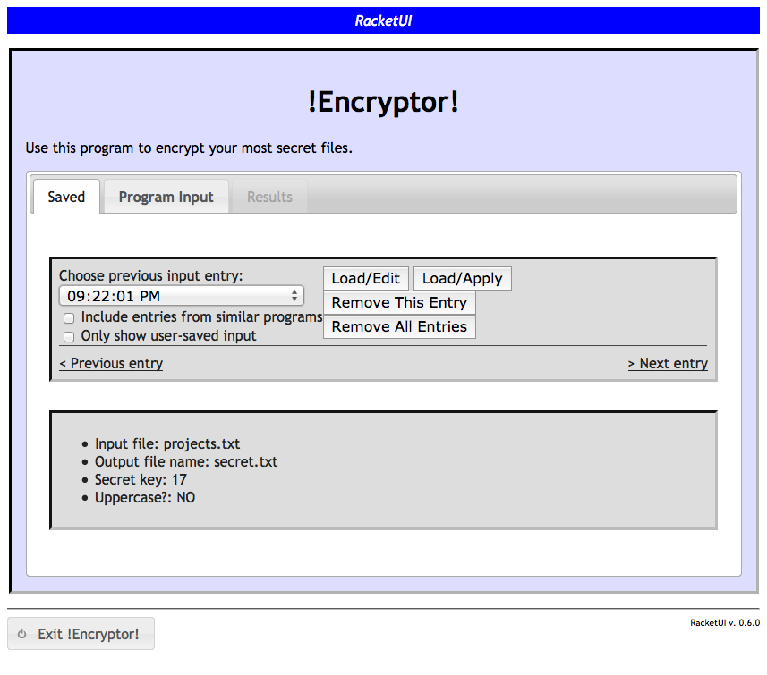

5 Using the Web Interface
Upon launch of a RacketUI web application, the user’s web browser should open to a window containing three tabs: a saved input tab, a program input tab, and a results tab.
5.1 Program Input
RacketUI automatically generates a form with appropriate input elements laid out based on a function’s web spec. The user interface should be self-explanatory, as standard web form elements are used.
The number, symbol, string specifications generate normal web form text boxes for the user’s input. Upon attempting to apply the function, the input will be validated (e.g. to ensure it is a number, or a non-empty string). The boolean input element is rendered as a labeled checkbox.
A listof web spec generates a list structure with handles allowing the user to reorder items in the list and buttons (with trash can icon) allowing the user to delete items in the list.
oneof specifications generate a popup menu where the user must choose one of the choices of the itemization; then appropriate input elements are provided for that choice.
For a (constant x) specification, the value x may be rendered as a string and displayed in a disabled input element (in some contexts, only the label will be rendered for a constant web spec).
File inputs display a platform-specific input element allowing the user to select a file for upload. Upon selection, the application will immediately beginning uploading the file. There is no way to cancel the upload (except by reloading the page (?)). When the file has been transferred to the application, its name will be displayed, along with a link to delete it from the input (this does not delete the file on the user’s file system - only the temporary copy uploaded to the RacketUI application). The file’s name itself is a link which will popup a separate window displaying the contents of the file. The user should also be able to right-click and save/download the file (this may be more useful with output files produced as a result of a function).
Upon providing valid entries for all required input, when the user clicks the "Apply input" button at the bottom of the page, the results tab will be activated. The program’s output result will be rendered at the top of the Results page, along with a display of the input below it. Clicking on the "Edit input again" button, or the "Program Input" tab will take the user back to the program input form to modify and reapply the input as desired.
5.2 Saved Input
RacketUI save data is stored in a "racketui" subdirectory of the standard directory for storing the current user’s preferences.
With every function application, or when the user clicks the "Save current input" button in the program input tab, RacketUI saves a snapshot of the user’s input, including any uploaded files. This makes it easier to recall, modify, and re-apply input without having to enter it all over again. Saved input is preserved even when the application is terminated.
The saved input tab provides a drop-down menu with a list of saved input items, identified and sorted by time and date. When an entry is selected, a preview of the input data is displayed in the bottom portion of the page. One can also use the left and right arrow keys, or the "Previous entry" and "Next entry" links on the page, to easily browse through the input history.
Initially, only input entries for the specific function that has been launched are shown in the saved list. However, if two distinct functions expect exactly the same type of input, then RacketUI allows the user to view all saved input entries for such similar functions by clicking the "Include entries from similar programs" checkbox. Thus, if another function had an input web spec similar to that of acronym above (i.e. ["..." (listof+ ["..." string+])] or even ["..." (listof ["..." string])], where the actual labels don’t matter), then the user can recall, edit, and apply lists of words entered from either web application on the saved input tab of each if this checkbox is enabled.
The list of saved input entries distinguishes between auto-saved and user-saved entries. The latter are displayed with asterisks and/or bold font in the menu. To filter the menu so that only user-saved entries are listed, click the "Only show user-saved input" checkbox.
In addition to loading and editing, or applying, input entries can also be individually or collectively deleted. Note that auto-saved entries are automatically purged – only a certain number of the most recent auto-saved entries are kept.
Here is screenshot showing a typical view of the saved input tab:

5.3 Miscellaneous
The web application interface provided by RacketUI does not involve page navigation in the browser; thus the forward and back buttons will not function. RacketUI occasionally saves the state of interaction, so even if the page is refreshed in the browser, any input that the user has entered should be reloaded. Also, if no user interaction occurs for a period of time (several minutes), the RacketUI application may reload and refresh its state the next time the user interacts with it. Even in this situation, any user input should still be preserved in the program input tab.
To exit the web application, click the "Exit ..." button at the very bottom left of the window. If the program is being run from DrRacket, the Interactions pane of DrRacket will be suspended until the RacketUI application is terminated.